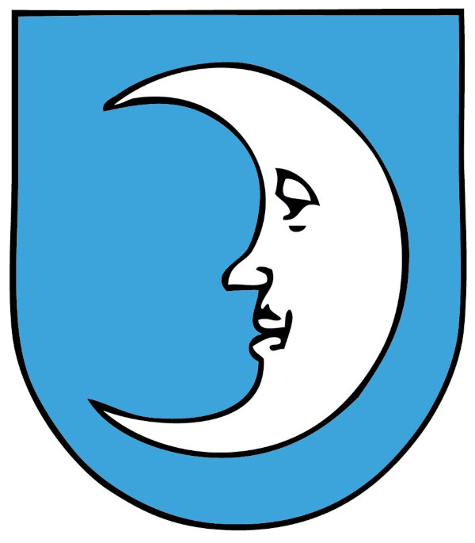

BRAUFREUNDE FRENKENDORF
Gemeinsam für die Bierkultur unseres Dorfes
Die Braufreunde Frenkendorf möchten die Bierkultur in Frenkendorf am Leben erhalten. Wir lieben handwerklich gebrautes Bier und suchen nach anderen Bierliebhabern, die sich uns anschliessen und gemeinsam mit uns einen Verein gründen wollen. Gemeinsam wollen wir das Wissen und die Leidenschaft für das Brauen von Bier teilen und unsere lokalen Brauereien unterstützen.
